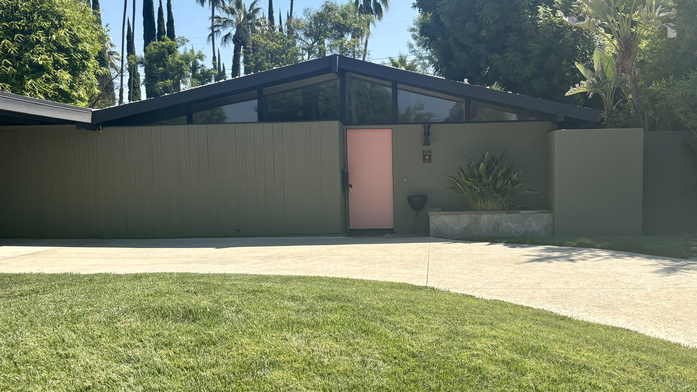
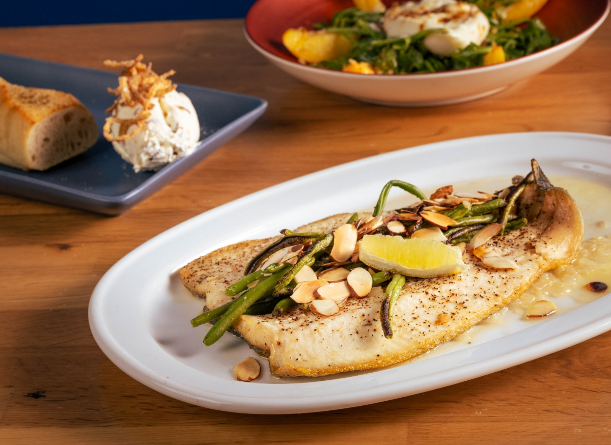
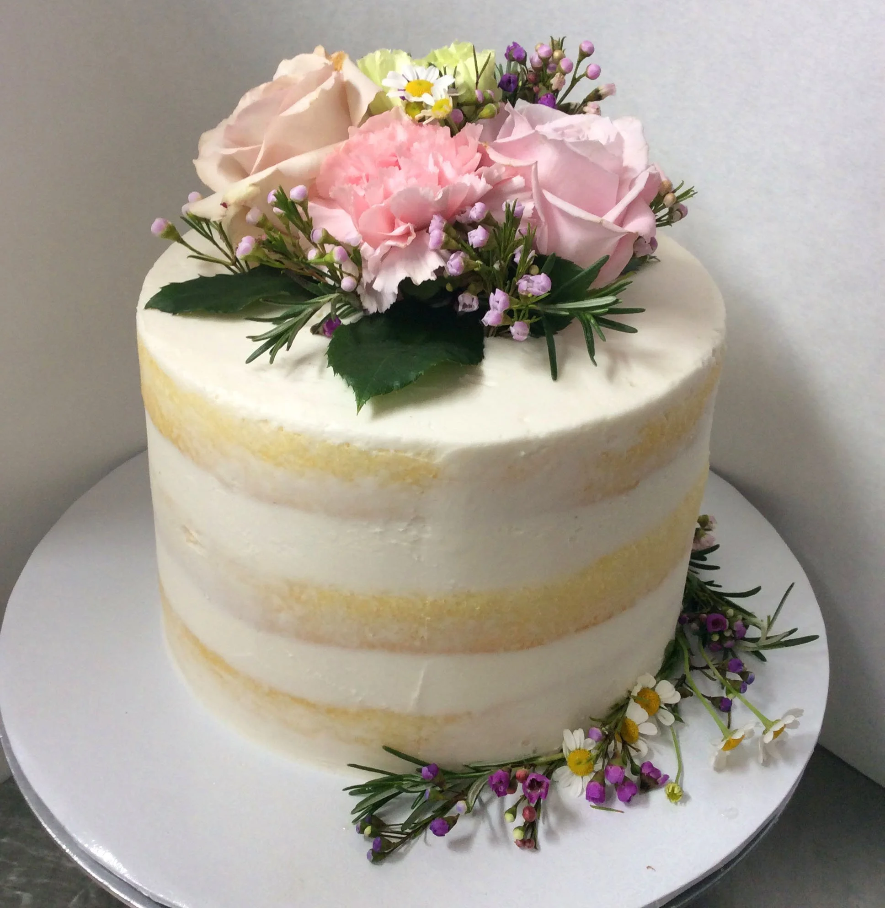
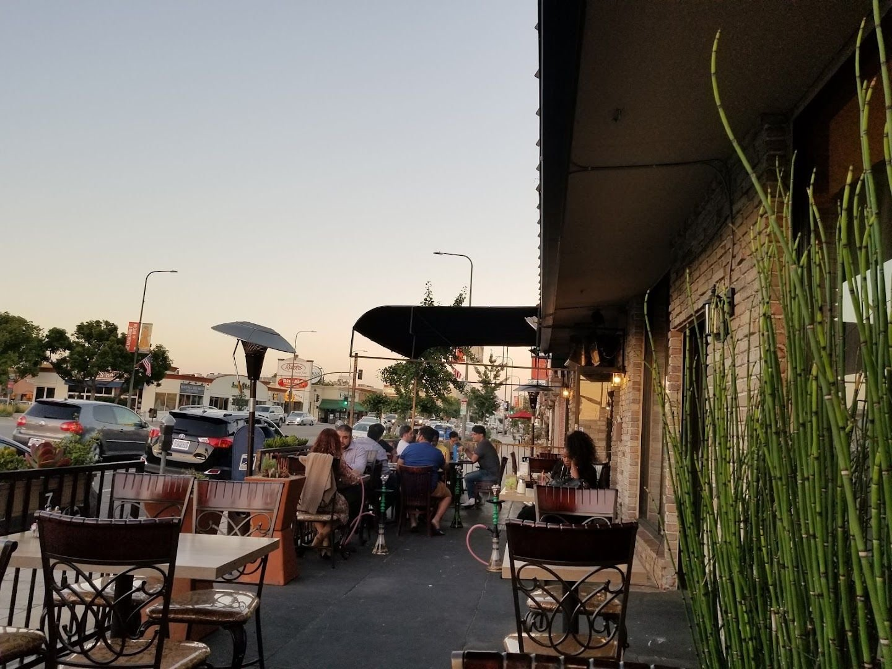
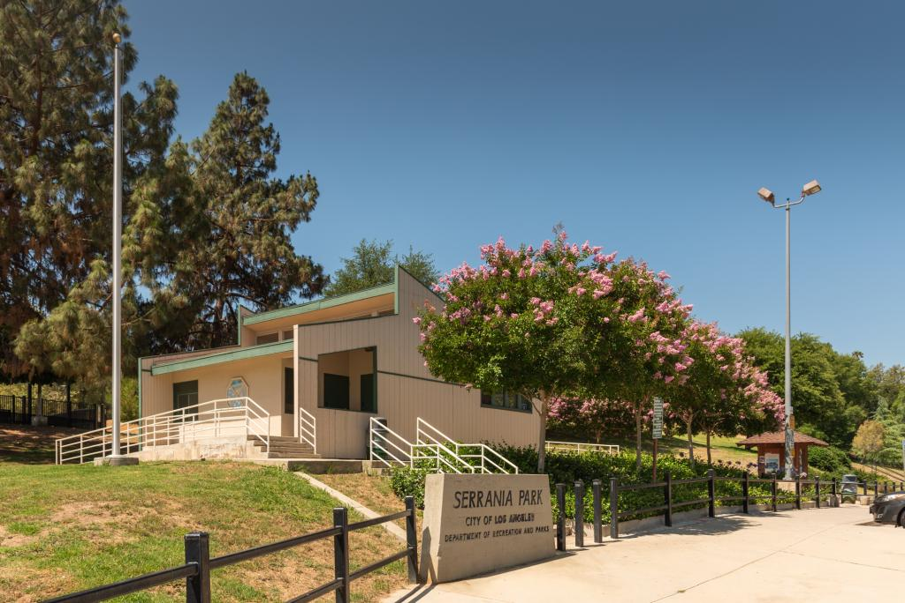
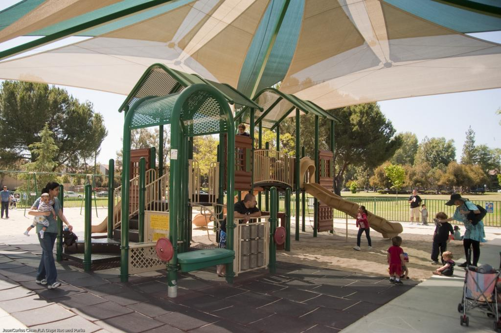
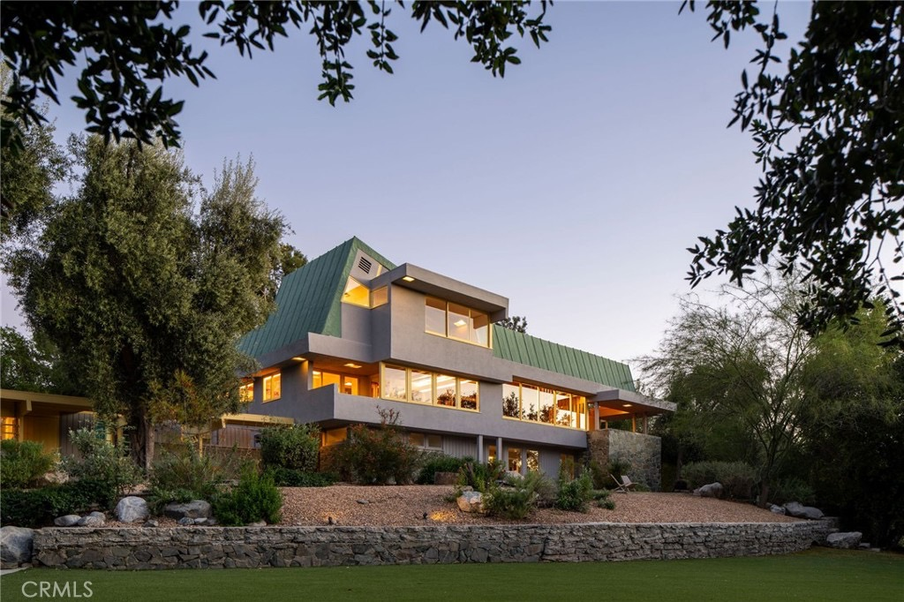

Woodland
Hills

Is Woodland Hills a good place to live?
Yes, if you want space, bigger lots, and real quiet over walkability. The drive into the rest of LA can be a head-scratcher if you're not used to it.
- Saturday ritual
- Farmers market
- Walk Score
- 48 / 100
- Trees planted at founding
- ~120,000
- Established
- 1922
Market schedule via Los Angeles County. Walkability via Walk Score.
Woodland Hills Real Estate Agent
What it actually feels like to live here.
Woodland Hills sits at the southwestern edge of the San Fernando Valley, where the flats give way to the Santa Monica Mountains. Ventura Boulevard still runs through it, but the neighborhood reads differently than its eastern neighbors, bigger lots, more cul-de-sacs, a working farm at Pierce College instead of a row of boutiques as the anchor.
What I love here is the room to breathe. South of the boulevard the streets climb into canyon-adjacent pockets with real privacy and real views, and north of it Warner Center and the Village give you everything you actually need without ever feeling like you're fighting for parking to get it.
The honest tradeoff is that it asks more of a car than Sherman Oaks or Studio City does. If a walkable strip is the whole point for you, this isn't quite that neighborhood, unless you land right on the boulevard, where it very much is.
Let me give you a tour9:00 AM–1:30 PM · Woodland Hills Certified Farmers' Market
Why Saturdays are worth building a morning around here.
Every Saturday morning, the Woodland Hills Certified Farmers' Market takes over 5650 Shoup Avenue, a couple of blocks off Ventura Boulevard. It's smaller than the big Valley markets, and that's exactly what makes it work, produce, flowers, something to eat standing up, and enough space to actually run into people you know.
If you're used to thinking of Woodland Hills as the quiet, car-dependent end of the Valley, a Saturday morning here is the fastest way to feel how much real neighborhood is underneath that.
Plan a Saturday visitWhere in LA is Woodland Hills?
Woodland Hills sits at the southwestern tip of the San Fernando Valley, with West Hills, Canoga Park, and Winnetka to the north, Tarzana to the east, the Santa Monica Mountains and Topanga to the south, and Calabasas just past its irregular western edge. Ventura Boulevard runs the same unbroken line here that it does through Sherman Oaks and Studio City, and Topanga Canyon Boulevard cuts north to south, climbing from the 101 straight up into the mountains toward Topanga and the coast.
North of the 101, the neighborhood is flatter and denser, Warner Center's towers, the Village at Westfield Topanga, Pierce College. South of Ventura Boulevard it rises into the foothills, where the streets get quieter, the lots get bigger, and the Woodland Hills Country Club sits at the center of its own neighborhood within the neighborhood.
The $10 billion reason Warner Center is about to change
The Rams' temporary practice facility opened on the Warner Center site in August 2024 and is still in use today. Since then things have started moving for real: the old Promenade mall that used to sit on this land came down, demolition started in January 2026 and the site is still fenced off and being cleared right now. That's the first physical step toward Rams Village at Warner Center, the roughly $10 billion plan for a permanent Rams headquarters, two indoor performance venues, close to 2 million square feet of retail and office space, a hotel, new housing, and almost 10 acres of public open space, across 52 of the nearly 100 acres the Kroenke Organization owns here. The new buildings themselves are targeted to start going up in 2027, headquarters first, with the full build-out taking about a decade after that. So the skyline hasn't changed yet, but the dust is real, and this is the single biggest thing happening to this neighborhood in a generation.

Places I keep sending people to.

The Local Peasant
A newer Ventura Boulevard gastropub from people who already know how to do this well, easy to make a regular spot.

Deux Bistro
A small, genuinely family-run French bistro, the kind of place where the warmth isn't a marketing line.

Hideout Cafe
An easy weekday breakfast standby with the kind of menu that makes a Tuesday morning feel like a small occasion.

Shirin Persian Cuisine
One of the Valley's real longtime Persian kitchens, crispy rice and stew that's worth the wait.

Doan's Bakery
A neighborhood bakery in the actual sense of the word, the kind you end up ordering every birthday cake from without meaning to.

Mazar Mediterranean Restaurant & Lounge
A real Lebanese kitchen with a hookah lounge in back, the kind of two-in-one spot that's easy to forget exists until you need exactly that.
Schools in and around Woodland Hills
El Camino Real Charter High SchoolPublic · 9–12 · 8/10
George Ellery Hale Charter AcademyPublic · 6–8 · 8/10
Woodland Hills Elementary Charter for Enriched StudiesPublic · K–5 · 8/10
St. Mel SchoolPrivate · K–8 (Catholic)
De Toledo High SchoolPrivate · 9–12 · West Hills
Public-school ratings are current GreatSchools ratings as of August 2026 and may change. GreatSchools uses several measures of school quality; a rating is not the whole story. Assignments and program eligibility depend on the exact property address. Verify through the LAUSD School Directory.
Parks & outdoor time

Serrania Park
A small pocket park framed by wooded hills, with a play area, picnic tables, and the Serrania Ridge Trail climbing to a Valley view.

Warner Park
Thirteen acres donated by the Warner family in 1967, with playgrounds, a lake, and a bandshell that hosts community concerts.
Top of Topanga Overlook
A free small lot, benches, and a panoramic Valley and mountain view that makes this a particularly good sunset stop.
Woodland Hills homes that have made the case.

Obsession No. 010
19950 Collier Street
R.M. Schindler's largest known residential project, restored top to bottom with a soaring wood-beamed great room and a salt-water pool behind the gate.
See why it made the editWoodland Hills on your mind? I've got you.
If space, quiet, and a real yard matter more to you than being able to walk to dinner, I can show you exactly which streets deliver that without giving up everything else.
Let's start hereHighland ParkLos FelizPasadenaSilver LakeSherman OaksStudio City